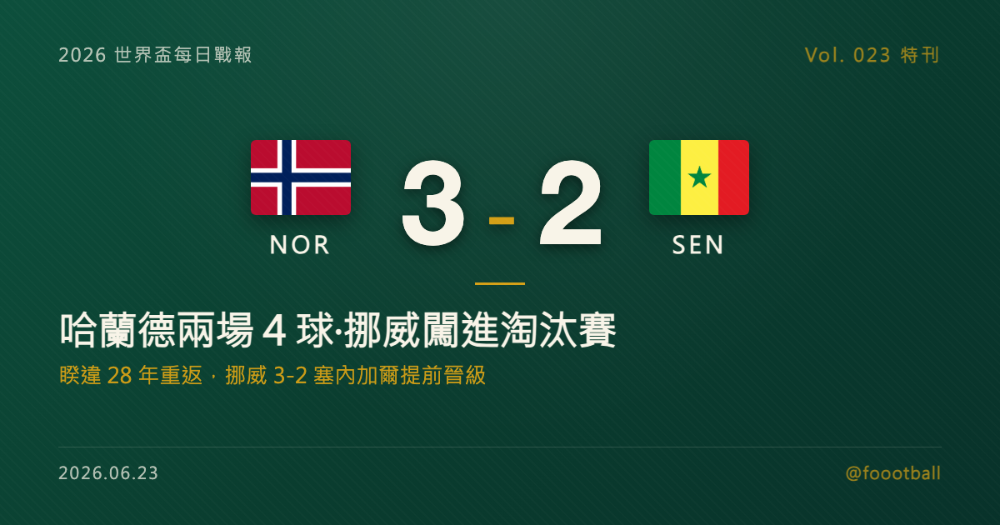

哈蘭德的世界盃答卷：兩場 4 球，挪威 28 年後重返就闖進淘汰賽
2026 世界盃 I 組次輪，挪威在東盧瑟福 3-2 力克塞內加爾。哈蘭德下半場梅開二度（48'、58'），加上佩德森的進球，挪威頂住對手補時追分、提前晉級淘汰賽。兩場世界盃合計 4 球，哈蘭德把俱樂部的進球效率複製到了國際賽最高舞台；而這也是挪威自 1998 年後、睽違 28 年重返世界盃的第一次闖進淘汰賽。這篇特刊把這場梅開二度、哈蘭德的世界盃答卷與挪威的等待，逐項講清楚。

2026 世界盃特刊｜Vol. 023 番外
有些球員的偉大，要等到世界盃才算真正被蓋章。對哈蘭德（Erling Haaland）而言，這一刻，似乎正在到來。
2026 年 6 月，在美國東盧瑟福的 MetLife 球場，挪威 3-2 力克塞內加爾。哈蘭德下半場梅開二度，把挪威帶進了淘汰賽。對一位在俱樂部層級早已是「進球機器」、卻遲遲沒有世界盃舞台可以證明自己的球員來說，這兩場世界盃、4 顆進球，像是一張遲來卻擲地有聲的答卷；而對睽違 28 年才重返世界盃的挪威來說，這更是一段漫長等待後的甜美回報。
這一夜值得慢慢拆——先拆這場對塞內加爾的梅開二度，再拆哈蘭德兩場 4 球的世界盃答卷，接著拆挪威 28 年的等待，最後，聊聊末輪對法國的頭名之爭。
一、對塞內加爾的梅開二度：下半場的兩記重擊
挪威這場勝利，是一場高潮迭起的進球大戰。
第 43 分鐘，佩德森先開紀錄。 上半場尾聲，挪威由佩德森（Marcus Holmgren Pedersen）先聲奪人，把比分帶到 1-0，也讓挪威帶著領先進入中場。這顆球來得正是時候——在半場結束前取得領先，既能穩住軍心，也能讓球隊以更從容的心態部署下半場的戰術。
第 48、58 分鐘，哈蘭德梅開二度。 易邊再戰，輪到哈蘭德接管比賽。第 48 分鐘，他在禁區內完成終結、把領先擴大為 2-0；第 58 分鐘，他再下一城、梅開二度，將比分改寫為 3-1。短短十分鐘內的兩記進球，幾乎把比賽的懸念一次解決——這正是哈蘭德最可怕的地方：只要給他空間與機會，他就會把它轉化成進球，而且幾乎不需要太多次數。對防守方而言，這種球員最讓人頭痛的，不是他每場製造多少機會，而是他「只要逮到一兩次機會，就足以決定一場比賽」。
塞內加爾並沒有放棄，薩爾（Ismaïla Sarr）在第 53 分鐘與補時第 93 分鐘兩度建功、苦追到 3-2，給挪威製造了不小的壓力。尤其補時的那顆，讓終場前的幾分鐘變得格外煎熬——對一支經驗尚淺、睽違多年才重返世界盃的球隊而言，能在領先被追近的情況下穩住心態、守完最後一擊，本身就是一種成長。但挪威最終頂住了，守下這場關鍵勝利。哈蘭德的梅開二度，成了全場的勝負手；若沒有他下半場那十分鐘的兩記重擊，這場勝負很可能是另一個故事。
二、兩場 4 球：進球機器的世界盃答卷
把鏡頭拉近到哈蘭德，會發現這 4 顆球的意義，遠不只是金靴榜上的數字。
過去幾年，哈蘭德在俱樂部層級的進球效率近乎恐怖——他幾乎重新定義了「中鋒該進多少球」這件事。但在國家隊層級，他卻長期缺少一個最高規格的舞台：因為挪威遲遲無法打進世界盃，這位世界級射手的國際賽履歷上，始終缺了「世界盃進球」這一欄。
而 2026 年，這個空白被一次性填滿、而且填得轟轟烈烈。首戰對伊拉克，哈蘭德梅開二度、挪威 4-1 取勝；次戰對塞內加爾，他再度梅開二度。兩場世界盃、4 顆進球，讓他在金靴榜上緊追領先群、與姆巴佩等人並列前茅。對一位首度征戰世界盃的球員而言，用「場均兩球」的開局來宣告自己的到來，幾乎是最理想的劇本。
這 4 顆球證明的，不只是哈蘭德的個人能力，更是一件事：他在俱樂部展現的那種「把機會轉化成進球」的穩定，完全可以複製到世界盃這個最高舞台。對一名以「終結」為立身之本的中鋒而言，能不能在世界盃進球，幾乎是衡量其歷史地位的最後一道門檻——許多被譽為頂級的射手，都曾在這道門檻前留下遺憾。哈蘭德用兩場比賽就跨了過去。
這一點之所以重要，是因為過去總有一種聲音質疑：哈蘭德的進球，是不是建立在豪門球隊源源不絕的傳球與機會之上？換到資源相對有限的國家隊、面對世界盃級別的防線，他還能不能維持同樣的效率？兩場 4 球，是對這種質疑最直接的回應。世界盃的防守強度、心理壓力與聚光燈，向來會放大一名球員的優缺點；而哈蘭德用最樸實的方式——把球送進網窩——證明了自己的進球能力並不挑舞台。對一位志在躋身「歷史級中鋒」行列的球員而言，世界盃進球這一欄的填補，是履歷上不可或缺的一塊拼圖。
三、挪威 28 年的等待：1998 之後的第一次
要讀懂這兩場勝利對挪威的份量，得把時間軸拉得更長一點。
挪威並不是世界盃的常客。在 2026 年之前，他們上一次出現在世界盃決賽圈，要追溯到 1998 年法國世界盃——那也是挪威隊史至今的最佳表現（闖進十六強）。此後將近三十年，這支北歐球隊始終與世界盃無緣，只能在一旁看著別人踢。對挪威球迷而言，這是一段漫長到幾乎讓人習慣失望的等待。在這 28 年裡，挪威足球並不是沒有人才——他們一次次在資格賽的最後關頭功虧一簣，眼睜睜看著世界盃的大門在面前關上。對一個足球文化深厚、卻長年無緣最高舞台的國家而言，那種「明明有好球員、卻總是差一口氣」的挫折感，外人很難完全體會。
而 2026 年，他們不只重返世界盃，還在小組賽前兩輪就連下兩城——據賽事統計，這也是挪威隊史首次在世界盃賽場取得連續兩場勝利，並憑此提前鎖定淘汰賽門票。對一支睽違 28 年才回到這個舞台的球隊來說，這樣的開局已經遠超許多人的預期。
這份回報之所以動人，是因為它背後是一整代球員的累積。這支挪威並非只有哈蘭德一人——他們擁有一批在歐洲頂級聯賽歷練多年的中生代，過去幾年一次次在資格賽門口飲恨，才終於換來這次的入場券。對這些球員而言，世界盃不是理所當然的舞台，而是用一整個職業生涯的等待換來的機會；正因如此，他們踢起來才格外有一種「不願浪費」的拚勁。當哈蘭德這樣的世界級球星，遇上一支終於重返世界盃、且求勝若渴的球隊，兩者之間的化學反應，正是這屆挪威最動人的故事。
四、世代射手的同框之夜
把視野放回整個夜晚，會發現哈蘭德的梅開二度，只是這一夜眾多巨星表演中的一幕。
同一個晚上，梅西對奧地利梅開二度、把世界盃生涯進球推上 18 球、登頂史上射手王；姆巴佩在自己的第 100 場法國代表賽踢進兩球、追平克洛澤；而哈蘭德也用一對進球，把挪威送進淘汰賽。三位分屬不同世代的頂級射手，在同一個夜晚各自梅開二度——如果說梅西代表的是即將謝幕的傳奇、姆巴佩是當打之年的王者，那哈蘭德，則更像是那個準備接過棒子、定義下一個十年的人。
這種「同框」之所以特別，是因為世界盃從來不只是當下的勝負，更是一條時間的長河。每一屆世界盃，都會有人謝幕、有人封王、也有人初試啼聲；而能在同一個夜晚，同時看到這三種敘事並存，本身就是足球迷的幸運。哈蘭德或許還沒有梅西、姆巴佩那樣的世界盃履歷，但他擁有他們此刻最珍貴的東西——時間。
對 25 歲上下、正值巔峰的哈蘭德而言，這只是他的第一屆世界盃。如果挪威能維持這樣的競爭力，未來幾屆世界盃，哈蘭德很可能會像今天的梅西、姆巴佩一樣，成為被後輩仰望、被紀錄追逐的那個人。一切的起點，就是這個把挪威送進淘汰賽的夜晚。他的故事，才剛剛開始寫第一章。
五、接下來：末輪對法國的頭名戰
挪威已經提前晉級，但末輪還有一個更大的目標——小組頭名。
I 組末輪，挪威將對上同樣兩戰全勝、由姆巴佩領銜的法國。這是一場不折不扣的「頭名對決」：兩隊都已晉級，但誰能拿下小組第一，將直接影響淘汰賽的對位——以頭名出線，往往能在淘汰賽初期避開另一組的強敵。
對挪威而言，這場球的意義不只在名次。睽違 28 年重返世界盃、又已提前晉級之後，再與衛冕亞軍法國正面掰一次手腕，是一次難得的「對標頂級」的機會——能讓這支年輕的球隊清楚地知道，自己究竟走到了哪裡、距離真正的強權還差多少。即使輸了也無損晉級，贏了卻能換來巨大的信心與聲望；這種「贏了賺到、輸了無妨」的處境，反而可能讓挪威踢得更放得開。而對球迷來說，哈蘭德與姆巴佩，兩位當代最具代表性的前鋒同場飆球，本身就是末輪最值得期待的對決之一。
說到底，足球之所以動人，往往就在於這種「等待終於有了回報」的時刻。挪威等了 28 年，才換來重返世界盃的入場券；哈蘭德等了好幾年，才終於有了一個與自身天賦相稱的舞台。當這兩段等待在 2026 年交會，並以「兩場全勝、提前晉級」的方式開花結果時，它的份量，早已超越了單純的勝負——它更像是一種證明：只要不放棄，遲來的機會，依然值得全力以赴。
從睽違 28 年的重返，到兩場 4 球闖進淘汰賽，再到末輪對法國的頭名戰，挪威與哈蘭德的世界盃，正漸入佳境。而這位進球機器在世界盃舞台上的答卷，才剛寫下開頭最漂亮的幾筆。
常見問題
Q：哈蘭德這屆世界盃進了幾球？ A：截至 I 組次輪，哈蘭德兩場世界盃合計 4 球——首戰對伊拉克梅開二度（挪威 4-1），次戰對塞內加爾再度梅開二度（挪威 3-2），在金靴榜上緊追領先群。
Q：挪威晉級了嗎？這是他們近年第一次嗎？ A：挪威已憑兩戰全勝提前晉級淘汰賽。這是挪威自 1998 年法國世界盃後、睽違 28 年重返世界盃決賽圈，也是隊史首次在世界盃取得連續兩場勝利。
Q：挪威末輪對誰？ A：末輪（美加墨 6/26）挪威將對上同樣兩戰全勝的法國，兩隊都已晉級，這場「頭名對決」將決定誰是 I 組第一——也是哈蘭德與姆巴佩兩大射手的正面交鋒。
Tags: 世界盃, 2026世界盃, 哈蘭德, 挪威, 進球機器, 世界盃射手